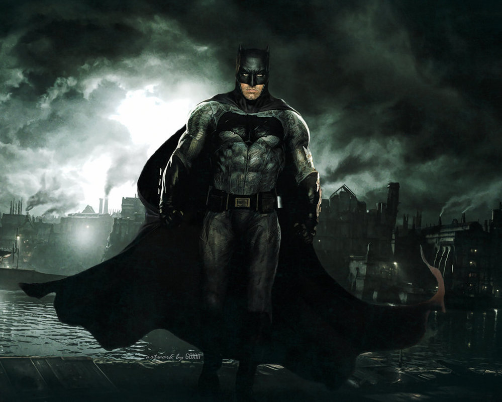
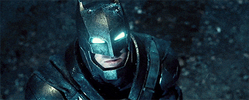

The Dark Knight Begins
Batman กำเนิดจากปลายปากกาของ Bob Kane และ เนื้อเรื่องโดย Bill Finger ต้นกำเนิดของนักปราบอาชญากรรมที่มีชื่อว่า Batman มีหลากหลายไม่แพ้คู่ปรับคนสำคัญของเขาที่มีชื่อว่า The Joker แต่ต้นกำเนิดเบื้องต้นที่เป็นที่ยอมรับกันมากที่สุดก็คือ...

ในค่ำคืนอันมืดมิดของ Gotham City, Bruce Wayne ทายาทของตระกูล Wayne ซึ่งมั่งคั่ง และเป็นที่นับหน้าถือตาของชาว Gotham City ได้กลายเป็นพยานผู้เดียวที่ได้เห็นการฆาตกรรม Dr. Thomas Wayne และ Martha Wayne พ่อและแม่แท้ๆของเขา โดยอาชญากรคนหนึ่งที่ต้องการเพียงทรัพย์สินของพวกเขาเท่านั้น Bruce เติบโตขึ้นโดยมีบาดแผลในจิตใจเกี่ยวกับการตายของพ่อและแม่ของเขา
เขาจึงฝึกฝนการต่อสู้แทบทุกแขนง ใช้ทรัพย์สินที่เขามีเพื่อสร้างสรรค์อุปกรณ์ ฐานทัพ และชุดรบที่ทรงประสิทธิภาพ เพื่อใช้ในการต่อสู้กับเหล่าร้าย รวมทั้งการนำความกลัวในจิตใจมาเป็นสัญลักษณ์ของเขา เป็นที่รู้กันในหลายๆวัฒนธรรมว่าค้างคาวคือสัญลักษณ์ของความชั่วร้าย และความน่าหวาดหวั่น ดังนั้น Bruce จึงออกแบบชุดในการปราบอาชญากรรมโดยใช้รูปแบบของค้างคาว และเรียกตัวเองว่า Batman...
